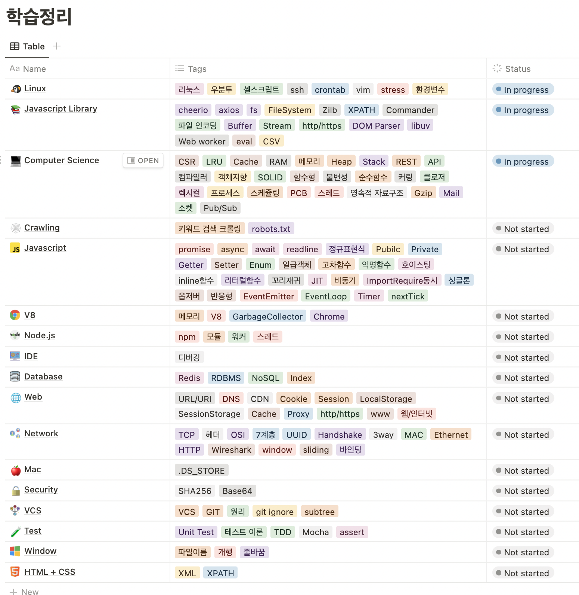
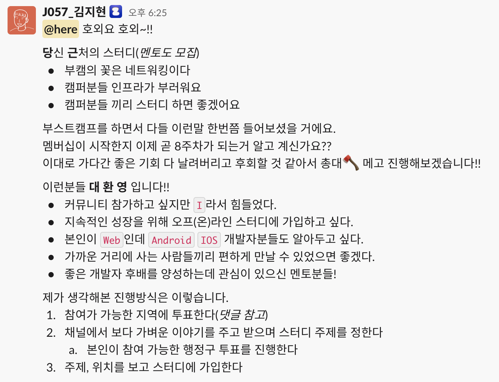
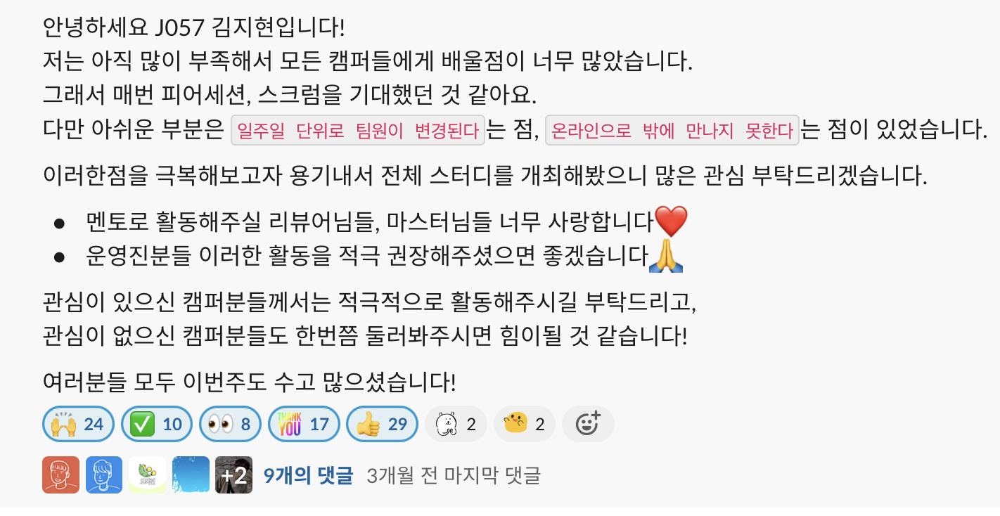
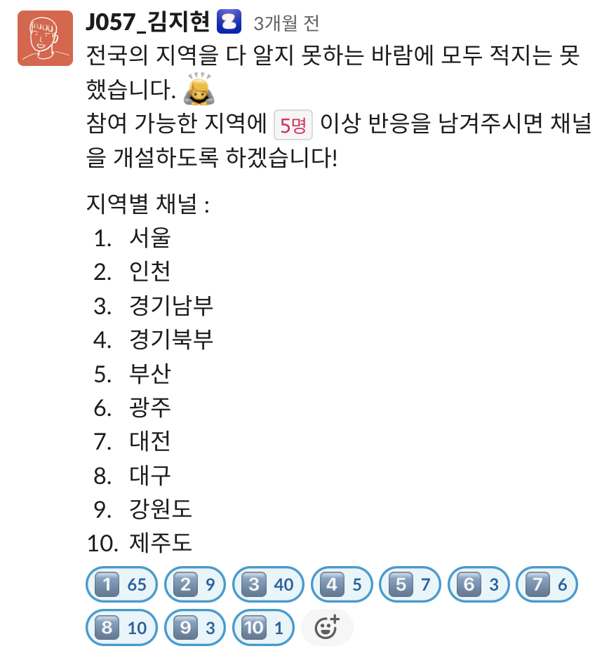
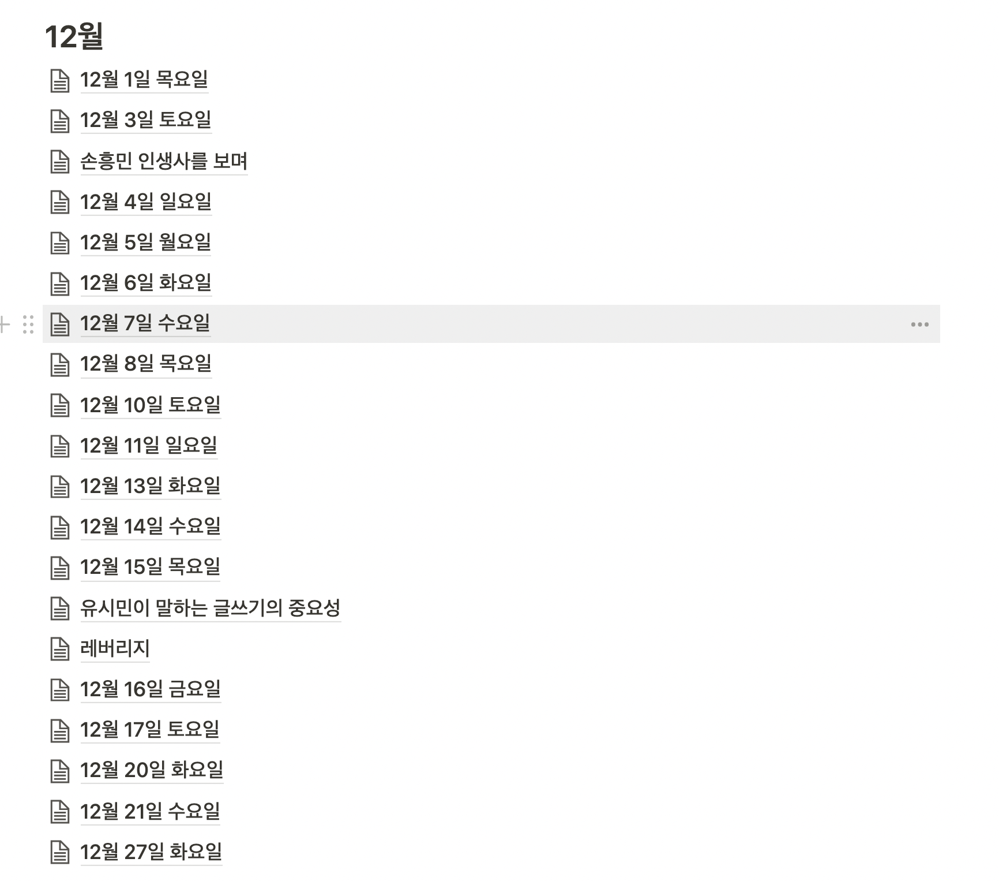
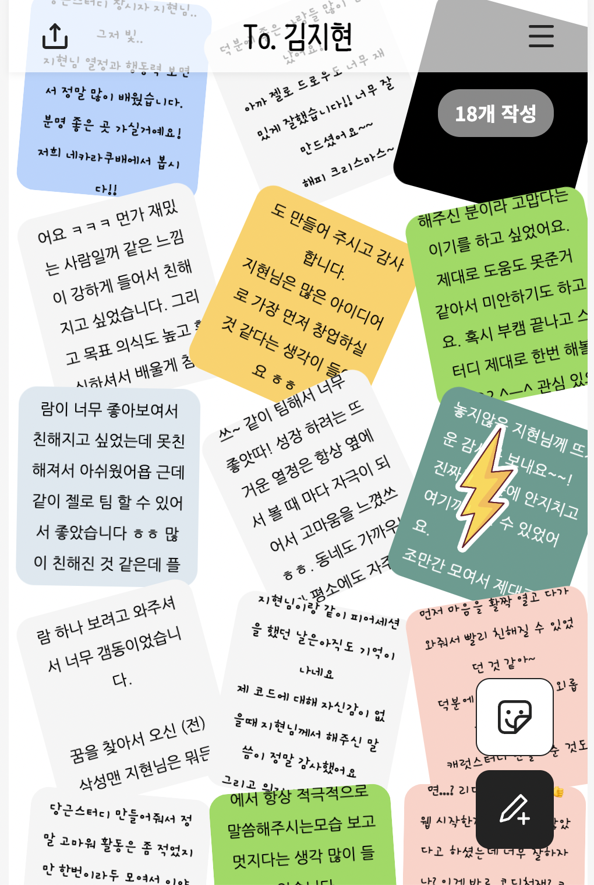

무모한 신입 개발자의 2022년 회고
다사다난했던 2022년이 막바지에 이르렀다.
오늘은 누구도 궁금해하지 않을, 그래서 더 남기고 싶은 일들을 기록해보려고 한다.
내 인생은 결정된건가?
마이스터 고등학교 졸업 → 1년간 재직 → 1년 8개월간 군대 → n년간 회사 생활
올해 상반기, 나는 누구나 예측할 수 있는 삶을 살고 있었다.
운이 좋게 고등학교 1학년 때 대기업 인턴에 합격하였다.
학생 인턴으로 방학동안 회사를 다녔고 졸업 후 정직원 전환이 되었다.
모두가 부러워했다.
좋은 직장에서 괜찮은 월급 받으며 가정을 꾸리고, 나 닮은 아이를 낳아 키우다가 정년퇴직하고 노후를 맞이하면 되는 삶을 모두가 그려주었다.
심지어 어떤 친구는 나를 회사명으로 불렀고, 다른 친구에게 나를 소개하는 자리에서도 회사 이름을 들먹이곤 했다.
솔직히 말해서 그때의 나는 그다지 기분이 나쁘지 않았다.
특별한 군생활
군대를 가야할 때가 됐고, 하나 하나 골라보기 시작했다.
이왕 갈거면 가장 힘들고 멋있는 곳으로 가고 싶었다.
병사가 실제 작전에 투입되는 해병대 수색대가 딱 맞았다.
자대배치 후 수색교육을 받을 땐 정말 죽을뻔 했다.
비 체육인이 수색요원이 되기란 정말 힘든 일이었다.
다양한 경험, 다양한 지역, 다양한 사람을 만났고 이 경험을 통해 나는 점점 바뀌기 시작했다.
바디프로필을 찍어보자
2022년이 시작 되고, 다이어트를 시작했다.
사실 태어나 처음해보는 다이어트였는데 꽤 성공적이었다.
아침 공복 유산소가 도움이 많이 됐다.
운동하는것 보다 식욕을 조절하는 것이 힘들었다.
더 자세한 내용은 아래 링크에 적어놓았다.
https://hyun222.tistory.com/304
최고의 사원 되기
스펙타클한 군생활을 마치고, 직장에 돌아오니 평화로운 일상이 반가웠다.
물론 여기도 인사 고과, 승진을 하기 위해 치열하게 경쟁해야했다.
나는 Software Quality Engineer / Tester 로서 제품 테스트, 테스트 케이스 설계, 테스팅 자동화 등의 업무를 수행했다.
하지만 회사에 나보다 열정적이고 오래 일하는 직원은 없었고, 얼마 지나지 않아 성과를 내기 시작했다.
2022년 상반기에는 승진을 하기도 했다.
프로그램 개발
- Tera Term Helper 개발 (Autohotkey)
- 제품과 Serial 연결 시 사용하는 Terminal에 제품별 PW와 명령어를 쉽게 입력하기 위한 프로그램
- 바코드 생성기 개발 (C#)
- 170여개의 냉동 음식 바코드를 제품이 인식하고 있는지 실물 바코드 없이 검증하기 위한 프로그램
- SmartThings 다운로드 웹서버 개발 (Node.js)
- 출시되지 않은 apk를 20여대의 스마트폰이 PC와 연결하지 않고 URL로 다운로드 받을 수 있는 서버
- 결과보고서 매크로 (VBA)
- 30개 이상의 사양 파일 중 결과 보고서에 첨부해야할 Sheet만 추출해 내는 프로그램
교육
- 생활가전 Be Creative Design Thinking 교육 이수
- Software Certificate Professional 교육 이수
- Cognex Vision Pro Standard 이수
- Onsys PowerPMAC Motion Controller Standard 이수
자격
- Software Certificate Advanced Programmer
시상
- 2022년 2, 6월 이달의 시상 by SW품질그룹
- 인덕션 터치 자동화를 위한 로봇 암 도입 건
- 바코드 생성기 개발건
다른 업무로 인해 테스팅 자격증인 ISTQB를 따지 못한건 아쉬운 일이다.
2회의 시상과 업무 성과로 인해 3번의 인사 고과는 모두 최고였다.
다만 팀 내에 상위 고과 T/O 는 정해져 있었고, 내가 잘 받은 만큼 팀원의 고과는 낮아졌다.
팀을 위해 기여한 내가 오히려 죄책감에 시달리는 이상한 구조였다.
다행히 우리 팀원들은 막내인 나를 많이 격려해주셨다.
본인의 승진이 늦어졌지만 애써 괜찮다고 해주셨다.
이렇게 정년퇴직까지 약 30여년을 버틸 생각을 하니 아찔해졌다.
내가 해야할 노력과는 방향이 다르다는 생각이 들었다.
어느날 내 뒷자리에 계신 파트장님이 나를 불렀다. ”지현님 테스팅 관련 보고서 제출했어요?“
나는 회전 의자를 휘리릭 돌려 대답하려 했지만, 나도 모르게 대답을 망설였다.
의자가 돌아갈 때 옆에 있던 선임님, 책임님, 수석님을 차례로 보았고,
내 3년 후, 10년 후, 20년 후 미래라는 것을 느꼈기 때문이다.
어쩌다보니 유튜버
올해 초에 나는 무언가라도 하고 싶었다.
그것이 내 삶을 송두리째 바꿀 수 있는 강력하고 무모한 것이길 바랬다.
그리고 그것을 언젠가 추억할 수 있도록 기록하고 싶었다.
그렇게 마음 맞는 친구 2명과 함께 유튜버가 되었다.
“청년들의 무모한 도전”
채널명 그대로 무모한 도전이라면 가리지 않고 해보았다.
- 붕어빵 장사 해보기
- 갯벌에서 굴, 바지락 캐서 팔아보기
- 산에 전자레인지 들고가서 호빵 팔아보기
- 음식 배달기사 되보기
- … 더보기
모든 도전들은 수익을 위함이 아니라 무모한 도전과 경험을 위함이었다.
따라서 수익을 발생시키지 않거나, 발생한 모든 수익은 기부하였다. (당시 심각한 적자가 발생했다.)
역시 돈을 많이 소모하는 일은 지속하기 힘들었다.
게다가 유튜브 활동을 통해 매번 무언가를 느끼고 성장할 수 있을지는 미지수였다.
따라서 잠정 중단하기로 결심했다.
기회가 된다면 꼭 다시 해보고 싶다.
생각보다 너무 재미있고 적성에 맞았던 것 같다.
너 왜 좋은 직장 때려치고 이걸 하니?
어릴적부터 내가 만든 것을 소개하고, 다른 사람이 써주는 것이 좋았다.
전자공학과였던 나는 자연스레 임베디드 개발을 접하게 됐다.
라디오, 인형뽑기, 도어락 등 여러 제품들을 만들었다.
나아가 전국기능경기대회 산업용로봇 직종에서 프로그래머로도 활약했었다.
전자 부품과 기구를 이용해서 제품을 만드는 것은 정말 매력적인 일이다.
하지만 부품을 살 때와 설계가 엇나갔을 때 고쳐나가는 비용은 상상 이상이었다.
따라서 고객들이 제품을 쓰면서 해주는 피드백들과 사용 데이터를 통해 실시간으로 개선해서 배포할 수 있다는 장점이 있는 웹 개발으로 직무 변경을 도전하였다.
부스트캠프를 통해 웹 개발을 알게 되다
부스트캠프는 네이버 커넥트 재단에서 운영하는 “개발자의 지속 가능한 성장을 위한 학습 커뮤니티”이다.
혼자서 학습하는 방법보다 훨씬 빠르고 효율적으로 개발을 배울 수 있을 것이라고 판단했다.
하지만 이렇게 좋은 과정은 역시나 경쟁이 매우 치열했다.
나는 꼭 부스트캠프에 합격하고 싶었기 때문에 코딩테스트를 준비하는 것은 물론이고, 자기소개 영상까지 제작해서 제출을 하였다.
이런 간절함 덕분인지 코테 성적이 부진했음에도 불구하고 합격할 수 있었던 것 같다.
지옥 같았던 부스트캠프 챌린지
부스트캠프로 웹개발에 입문한 나는 다른 캠퍼들보다 역량이 많이 부족했다.
특히 챌린지 기간에 CS 지식이 없어서 엄청나게 고생했다.
물론 전공자들이 쏟은 시간에 비하면 턱없이 부족하겠지만 말이다.
챌린지 마지막 2주 동안은 수면시간이 없었다.
45분 공부 + 15분 취침을 반복했다. (주말에는 16시간 이상 취침..)
다행히 열심히 만들어놨던 나의 체력 덕분에 버텨낼 수 있었던 것 같다.
이때 해놨던 학습정리가 아직도 유용하게 쓰이고 있다. 
커뮤니티를 느끼게 해준 부스트캠프 멤버십
멤버십을 통해 본격적으로 웹 개발을 공부하기 시작했다.
앞선 챌린지 기간에 배운 것들 덕분에 빠르게 학습할 수 있었다.
멤버십 기간 동안은 여러개의 프로젝트를 통해 웹 풀스택 과정을 공부할 수 있도록 설계됐다.
프로젝트를 하면서 나는 백엔드 개발이 더 잘 맞는다고 느껴졌다.
프론트엔드도 재밌지만, 보안이나 데이터를 직접적으로 다룰 수 있다는 것에 흥미를 느꼈다.
백엔드 개발자로 진로를 정하고 나서 정말 많은 귀인들을 만났다.
마음 같아선 실명을 하나 하나 거론하고 싶지만 참아보려고 한다.
귀인들께서는 백엔드 개발자로서 공부해야하고 나아가야할 방향을 알려주셨다.
내가 무엇을 모르는지 모르는 상태에서 학습거리와 방향을 알려주는 것이야 말로 최고의 조언이라고 느꼈다.
또한 모르는 것은 모른다고 말해야 빠르게 성장할 수 있다는 것도 느꼈다.
해보자 스터디 모집!
멤버십 5주차에 만났던 분들이 있다.
이분들과는 죽이 정말 잘 맞았다.
오전 10시에 시작한 데일리 스크럼이 13시에 끝났을 정도이니 말이다.
부스트캠프가 끝나더라도 이분들과 계속 연락하고 싶었고, 스터디도 같이 해보고 싶었다.
군대 훈련소 때 처럼 동기들이 평생 친하게 지낼 것 같지만 자대배치를 받고 나면 그런일 없었다는 듯 멀어지게 되는 것이 두려웠다.
그리고 나뿐만 아니라 다른 캠퍼들 역시 이런 기회를 놓치는 것이 아까웠다.
왜냐하면 나보다 똑똑하면서 열심히 공부하는 사람이 부스트캠프에 엄청 많았기 때문이다.
그래서 아주 시원하게 질러보았다.



다행히도 상당히 많은 분들이 참가해주셨다.
모집 이후에 내가 속한 경기남부를 제외하고는 운영에 본격적으로 관여하지 못한점이 아쉽다.
다들 적극적으로 활동할 수 있는 분위기를 만든다는게 정말 어려운 일이라는 것을 많이 느꼈다.
사람들이 스터디에 자발적으로 가입한 그 순간이 가장 의욕이 높다.
따라서 스터디에 가입하자마자 바로 활동을 이어나갈 수 있도록 시스템을 설계했어야 했다.
다음에 모집할 일이 생긴하면 시스템을 먼저 설계 후 모집을 할 것이다.
이름부터 완벽한 우리의 프로젝트
멤버십 마지막 6주간은 4명으로 팀을 꾸려 이제껏 배운 지식으로 서비스를 만들어보는 것이었다.
내가 속한 젤로팀은 젤로드로우라는 드로잉 게임 서비스를 만들었다.
나는 여기에서 서버 개발을 맡았다.
우리 팀에는 분야별로 최고의 스페셜리스트들이 있었다.
디자인, 서버, 프론트 모두 완벽한 팀 구성이었다.
팀에서 내가 해야할 것은 팀원의 수준에 맞는 빠른 성장과 분위기 메이킹이었다.
힘들고 지쳐도 모두가 조금 더 힘낼 수 있도록 긍정적이고 활기차려고 많이 노력을 하였다.
회의한 내용이나 공부한 내용을 문서화하는 노력을 통해서 커뮤니케이션 비용을 줄였고, 문서화를 통해서 더 빠르게 성장할 수 있었다. 문서화 구경하기
특히 같이 서버 개발을 하신 동재님을 통해 아주 많은 것들을 배우게 됐다.
결과적으로 우리는 보통 10시부터 02시까지 개발과 회의를 진행했고, 부스트캠프 7기의 모든 프로젝트 중 GitHub Star가 가장 많은 프로젝트가 됐다. 가장 감사했던 부분은 끝까지 열정적이고 긍정적인 분위기 속에서 프로젝트를 잘 마칠 수 있었다.
부스트캠프를 통해 얻은 것
하나를 꼽자면 “기록하는 습관”인 것 같다.
챌린지 기간에 생긴 습관이다.
비전공자가 CS 지식을 학습해서 요구사항이 담긴 문제를 풀기란 정말 힘든 일이다.
즉, 챌린지에서 멤버십으로 넘어가는 것이 나에겐 큰 과제였다.
내가 보여줄 수 있는 것은 “요구사항을 얼마나 충족했는지?”가 아니라 “얼마나 열심히 학습하고 성장했는지?” 였다. 따라서 의도적으로 학습정리를 하려고 노력했다.
이렇게 한달간 학습정리, 회고를 반복하다보니 자연스레 기록하는 습관이 생기기 시작했다.
7월부터 매일 일기를 쓰기 시작했더니 벌써 많은 양의 일기가 모이게 됐다.

바뀌고 싶다면, 어제보다 더 나은 삶을 살고 싶다면 매일 일기를 통해 회고를 하는 것이 최고인 것 같다.
부스트캠프를 통해 개발 역량 보다도 더 값진 것을 얻어버렸다.
롤링 페이퍼
부스트캠프가 끝날 무렵 운영진께서 롤링페이퍼를 돌릴 수 있도록 가이드 해주셨다.
아무도 내 롤링페이퍼에 안 적으면 어떡하나.. 라는 심정으로 링크를 돌렸다.
생각치도 못하게 많은 분들이 작성해주셔서 너무나 뿌듯했고 감사했다.

나의 2023년은?
부스트캠프가 끝난 12월 16일까지 아주 신나게 놀았다.
세부도 갔다오고, 스키장, 부산, 경주 등 다양하게 놀다왔다.
이제 신나게 놀았으니 2023년을 열심히 살아보려고 한다.
조금 더 정확히 얘기하자면 노력을 들이지 않고도 열심히 살 수 밖에 없는 환경을 만들어보려고 한다.
루틴화. 아침에 일어나서 어떤 행동을 할지, 자기 전에 어떤 행동을 할지 정해서 매일 그렇게 행동할 것이다.
예를 들어, 아침에 일어나자마자 물 한잔 마시기와 같은 것들이다.
이런 루틴을 통해서 침대에 계속 누워있는 게으름을 줄일 수 있을 것이다.
이외에도 계속 바뀌는 목표들이 존재한다.
상황에 따라서 계속 변화하는 것들이라 대외적으로 공개하긴 힘들 것 같다.
하지만 이런 상황에도 바뀌지 않는 하나의 목표는 바로 영어이다.
지금은 영어로 일상 대화를 하는데 거의 문제가 없는 수준이다.
따라서 올해 내 목표는 대학 강의를 들을 수 있을 정도의 영어 실력이다.
TOFEL 110점 받고 싶다!!!